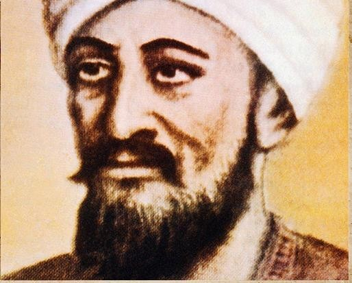

Önemli bazı bilim insanlarını ve bilim merkezlerini sizinle paylaşacağım . Bunlardan ilki Endülüs Bilim Kültür ve Eğitim Merkezi
ENDÜLÜS, BİLİM KÜLTÜR VE EĞİTİM MERKEZİ
Endülüs, İspanya’nın güneyinde, bir dönem Arapların etkisi altında kalarak şekillenmiş, sonrasında yeniden Hristiyanların egemenliğine girmiş olan bölgesi.Malaga, Granada, Cordoba gibi birçok şehirden oluşan, 1980’den beri özerklik statüsüne sahip bu bölge, nüfus bakımından da İspanya’nın en büyük bölgesi. Bölgenin dili, Endülüs lehçesiyle İspanyolca. Hatta “Yeni Dünya” diye adlandırılan Latin Amerika’da konuşulan İspanyolca’nın, bu bölgeden 16. ve 17. yüzyıllarda göç eden Endülüslülerden geldiğini söylemek mümkündür.
Eğitimin papazların tekelinde olduğu Ortaçağ Avrupa Hristiyan dünyasında, sadece Latince olarak okuma yazma öğretmekle sınırlı, dinî hayata yönelik ve erkek çocukların katılabildiği bir okul eğitimi söz konusuydu. Yeni bir bilgi üretilmesi söz konusu değildi.Endülüs, İspanya ve Avrupa milletlerinin ihtiyacı olduğu bir zamanda bir bilim, kültür ve eğitim ülkesi olarak hizmet vermişti. Kastilyalı, Leonlu, Aragonlu ve Navarlı zeki gençler Endülüs’e gelerek Arapça öğreniyor, dersler alıyor, bu arada Endülüs eşrâfına karışarak Müslümanların âdetlerini benimsiyor ve âdetâ Endülüslüleşiyorlardı. Yani, Müslümanların yaşantısına ayak uyduruyorlar, onlar gibi giyiniyor, yiyip içiyor, hayat tarzı ve âdâbı muâşeret kurallarını benimsiyorlardı. Onların bu durumunu, barbarlıktan medeniyete geçiş olarak değerlendirmek mümkündür.Endülüs’te eğitim ve iş imkanları bol olduğu için Hıristiyan ülkelerden Endülüs’e gelen insanlar, hem eğitim alıyorlar ve hem de çalışacak bir iş bulabiliyorlar, böylece hayatlarını Müslümanlar gibi müreffeh şekilde yaşama fırsatını yakalayabiliyorlardı. Bunun en çarpıcı örneklerinden birisi Kurtuba’da eğitim alarak Avrupa’ya dönen ve daha sonra II.Silvester (999-1003) adıyla Papa seçilen Gerbert’tir. Gerbert memleketine döndüğünde, öğrenmiş olduğu astronomi, matematik ve cebir bilgilerini duyan Hristiyanlar çok şaşırmışlar ve bu bilimleri sihir saymışlardır.711 yılından 1085 yılına kadar 374 sene İslam hâkimiyetinde kalmış olan kadîm Vizigot başkenti Tuleytula, Hıristiyanların eline geçerek
VI.Alfonso’nun yeni başşehri olduktan sonra, bu medenî birikimi sayesinde zamanla İspanya devletleri ve diğer Avrupa ülkelerinden gelen öğrencilere hizmet veren bir bilim merkezi hâline gelmişti. VI.Alfonso, Endülüs medeniyetinin etkisinde kalarak sarayının her yanını İslam kültürünün alâmetleriyle bezemişti.
ENDÜLÜS’TE KİTAP VE KÜTÜPHANELER
Endülüs’te de eğitime, kitaba ve kütüphaneye önem verilmiştir. Fransız araştırmacı Henri Peres, kitap sevgisinin, Endülüs halkının en bariz özelliklerinden biri olduğunu belirtmiştir. İlimle uğraşan bir Endülüslüye göre kitap, mücevherden daha kıymetlidir. Endülüs’te kitap sevgisi, sadece ulemaya mahsus olmayıp, toplumun genelinde gözlenen bir özellikti.Bu yüzden de Endülüs’te çok sayıda kitap yazılmış, gerek devlet ricaline gerekse ulemaya veya diğer şahıslara ait büyük kütüphaneler oluşturulmuştu. Böylesine bir medeniyetin can bulduğu bu topraklarda zaman zaman çeşitli bağnazlıklar ya da iç çatışmalar sırasında kitap ve kütüphane tahribatı da yaşanmıştır. Yakılan kitaplara bakarak Müslümanları çeşitli olumsuz sıfatlarla vasıflandırmak en hafif şekliyle haksızlık olur. Reconquist sırasında ve sonrasında Katolik Hıristiyanların yaktıkları kitapların sayısının bir milyona kadar ulaştığıkayıtları vardır. Endülüs’te tesis edilen ilk ve en önemli kütüphane II. Abdurrahman döneminde (206- 238/822-852) kurulan ve II. Hakem döneminde (350-366/961- 976) kitap sayısı altı yüz bine ulaşan Kurtuba kütüphanesidir. Tam bir kitap aşığı olan II. Hakem’in Kitabu’l-eğânî için, kitabın müellifi olan İsfahanî’ye bin dinar verdiği rivayet edilir. Onun zirveye taşıdığı Kurtuba’daki bu kütüphanenin yanı sıra Malaga Ulu Camii’nde İbnü’l-Lüb el-Mâlikî ve İşbiliye Ulu Camii’nde İbn Mervân el-Bâcî birer kütüphane kurmuşlardı.32 Hem Kurtuba’da hem de Kadis gibi başka şehirlerde yüz binlerce kitaba sahip kütüphaneler bulunmaktaydı.
Endülüs’te Müslümanların Kitap Yakma Hadiseleri
Endülüs’te iç isyanlar sırasında çok sayıda kitap ve kütüphane zarar görmüştür. Ancak özellikle siyâsî mücadele içerisinde olan farklı kesimlerden insanların çatışmaları, en çok ulemaya ve onların telifatına zarar vermiştir. Çünkü rakip olarak görülen insanlar ilim ehli ise onlar, çeşitli gerekçeler ileri sürülerek zındıklıkla itham edilmiş, ardından da hem eserlerinin yakılması için hem de katledilmeleri için fetvalar verilerek onların toptan imhasına gidilmiştir.
Endülüslü Bilim İnsanları ve Bilime Katkıları
Günümüz İspanyasında yaklaşık 700 yıl varlığını sürdüren, Müslüman bir devlet olan Endülüs, yetiştirdiği alimlerle bilim tarihine yön verdi. Avrupa'da cerrahlığı sadece berberlerin ve kasapların yapabildiği bir dönemde, bu Müslüman alimler, yeni cerrahi aletleri bulup günümüzde dahi kullanılabilecek bilimsel yeniliklere imza attı. Uçan bir makine keşfeden Abbas ibn Firnas'tan ilk ecza kitabını yazan İbnü'l Baytar'a, ilk cerrahi aletleri icat eden Zehravi'den göz hastalıkları hakkında önemli bilgiler veren El Gafiki'ye kadar pek çok Endülüslü Müslüman bilim insanı çalışmalarıyla Batı'yı etkiledi.
ABBAS İBN FİRNAS-UÇAN MAKİNE
Abbas ibn Firnas, tarihte uçan bir makine yapıp ve uçma konusunda gerçek bir girişimde bulunan ilk kişidir. 9. yüzyılda yaşayan Müslüman âlim, imza attığı birçok keşfin de etkisiyle döneminde önemli bir yere sahipti. Devrin hükümdarı tarafından "hâkim-ül endülüs" unvanı verilen Müslüman bilim adamı aynı zamanda ünlü bir şair, astrolog, müzisyen, astronom ve mühendisti.
Abbas ibn Firnas, uzayı temsil eden bir gök küresi kurdu ve sonraları Avrupa'da
astronominin gelişmesinde önemli tesiri olan Sindhind tablolarının çizimlerini yaptı. Kuvarstan taşından kristal yapmayı ve kristal kesimini bilim insanlarına tanıttı. Devrin hükümdarı olan I. Muhammed'e daha önce benzeri bulunmayan menkane adı verilen bir saat takdim etti.
Abbas ibn Firnas'in uçan bir makine geliştirmesi ona en büyük ünü kazandırdı. Bu makine ile çöl gölgelerinde birkaç başarılı uçuş gerçekleştirdi. Kurtuba'daki meşhur iki uçuşu öncesinde tasarımını geliştirmiş oldu.
Abbas ibn Firnas'in uçan bir makine geliştirmesi ona en büyük ünü kazandırdı. Bu makine ile çöl gölgelerinde birkaç başarılı uçuş gerçekleştirdi. Kurtuba'daki meşhur iki uçuşu öncesinde tasarımını geliştirmiş oldu.
EBU’L KASIM EL ZEHRAVİ-CERRAHİ ALETLER
Tıp dünyasındaki birçok ilke imza atan Zehravi, cerrahinin atası olarak kabul edilir. Zehravi sayesinde cerrahi müstakil bir bilim dalı haline geldi. Kendi dönemine kadar başarılamamış ameliyatları yaptı, yeni metotlar ve cerrahi aletler keşfetti. Kurtuba yakınlarındaki Medinetüzzehra 930 yılında doğan Zehravi, eğitimini de Kurtuba'da aldı. Yazdığı et- Tasrif adlı otuz bölümden oluşan tıp kitabı 17. yüzyılda Avrupa'daki tıp fakültelerinde ders kitabı olarak okutuldu. Bu kitapta cerrahide kullandığı
aletlerin tariflerinin yanında resimleri de bulunur. Yaklaşık 200 cerrahi aletin çoğu daha önce hiçbir ameliyatta kullanılmadı. Gerçekleştirdiği diğer ilkler ise şöyle; ilk defa fıtık ameliyatını gerçekleştirdi ameliyatlarda kendine has anestezi metodunu uygulamaya soktu. Kedi bağırsağını, ilk defa kullandı. Bugün ameliyatlarda yaraları dikmek için kullanılan bağırsaktan yapılmış iplikler, Zehravi'den günümüze geldi. Toz haline getirerek karıştırdığı ilaçları, kapsül benzeri, hayvan bağırsağından yaptığı küçük keseler içinde hastalara sundu. vücut içi yaraları dikmede ilk defa kullandı.

Kanamanın durdurulması konusunu damarların bağlanması metodunu Fransız cerrahtan beş asır önce buldu. Bugün tredelenburg pozisyonu olarak bilinen yöntemden Alman cerrahtan bin sene önce bahsetti.
Tredelenburg Pozisyonu : Hayati organlara kan akışının azaldığı zamanlarda, kan akışını temin etmek için hasta sırt üstü bir masaya yatırılıp ve ayakları yukarı gelecek şekilde masanın ayarlanması
Tredelenburg Pozisyonu : Hayati organlara kan akışının azaldığı zamanlarda, kan akışını temin etmek için hasta sırt üstü bir masaya yatırılıp ve ayakları yukarı gelecek şekilde masanın ayarlanması
EL GAFİKİ-GÖZ HASTALIKLARI
Muhammed b. Kassum b. Eslem el Gafiki el Endülüsi künyesine sahip Endülüslü Müslüman bilim insanı el Gafiki, 13. yüzyılda Kurtuba yakınlarında Gafik beldesinden doğduğu düşünülür. El Gafiki'nin göz hastalıkları üzerine kaleme aldığı "Göz İlaçları Kılavuzu (el Mürşit fil Kühl)" eseriyle tanındı. Müslüman alim bu eseri, döneminde gözle ilgili teorik ve pratik bilgiler bulunmadığı için yazdığını söyledi. Bu eserinde göz ilaçları, bunların hazırlanışı, göz için faydalı ve zararlı renklerden bahsetti. Aynı zamanda yirmi beş adet göz
cerrahisiyle ilgili aleti şekilleriyle birlikte tanıttı.
Göz patolojisiyle genel patoloji arasındaki bağlantıyı tespit eden el Gafiki, modern tıbba öncülük etti.İslam dünyasında göz hekimliği konusunda yazılmış en önemli eserler, onun kaleme aldığı bu eser kabul edilir. Göz kapaklarının içinde çıkan baloncuk yüzünden görmenin kalıcı olarak etkilenmesiyle ilgili onun geliştirdiği tedavi, İkinci Dünya Savaşı'nın sonuna kadar kullanıldı.
İDRİSİ-DÜNYA HARİTASI

İdrisi dönemin en kapsamlı Dünya atlasını hazırladı. 15 yıl boyunca bu iş üzerinde çalışan İdrisi, binlerce gezgin ve yolcuyla görüşmeler yaparak daha önce haritaya geçirilmemiş bazı bölgeleri de içeren yetmiş tane doğru harita hazırladı. Avrupa ve Asya kıtalarıyla Afrika kıtasının ekvatorun kuzeyinde kalan bölümlerini Marco Polo'dan tam iki yüzyıl önce haritaya aktardı. İdrisi, Cebelitarık boğazındaki Septe şehrinde doğdu. Fas'taki İdrisiler hanedanının kurucusu olan I. İdris'in soyundan gelir. Döneminin en büyük haritacısı olan İdrisi,
aynı zamanda botanik âlimidir. Hayatının ilk dönemlerini Endülüs ve Kuzey Afrika'ya seyahatlerle geçirdi. Henüz on altı yaşında iken, 1115 yılında Anadolu'yu ziyaret etti ve İngiltere dâhil olmak üzere Avrupa'nın pek çok ülkesini gezdi. Sicilya Kralı'na takdim ettiği eserde Avrupa ve Asya kıtalarıyla Afrika kıtasının ekvatorun kuzeyinde kalan bölümlerini Marco Polo'dan tam iki yüzyıl önce haritaya aktardı.
Kitapta, dünya ekvatorla ikiye ayırılmış ve güney yarım kürenin çok sıcak olduğu için canlıların yaşamasına elverişli olmadığı belirtildikten sonra, kuzey yarım küre yedi iklim halinde ekvatordan kuzeye doğru incelenmiştir. Her iklim de batıdan doğuya doğru çeşitli bölgelere ayırıldı. Kitapta yer alan ilginç bilgilerden biri de yer çekiminden söz edilmesiydi. İdrîsî'ye göre, mıknatısın demiri çekmesi gibi yer de cisimleri çekmektedir, bırakılan cisimlerin yere düşmesinin nedeni de bu çekim kuvvetidir. Haritacılık alanında yaptığı çalışmalarla Batılı bilim adamlarını etkileyen İdrisi'nin bu eseri aynı zamanda Avrupa hakkında gerçeğe en yakın bilgileri veren ilk yapıt olma özelliğini taşır.
CABİR BİN EFLAH-HALKALI ASTRONOMİ ALETİ
Endülüs'te yetişen astronom ve matematik âlimi Cabir bin Eflah, Batı'da Geberdiye olarak bilinir. Hayatı hakkında bilgi bulunmayan bilim adamı, Batılı astronom Batlamyus'u eleştirmesiyle tanınır. Batlamyus'un el-Mecistî isimli eserindeki yanlışları düzeltmek üzere telif ettiği Kitâbü'l- Hey'e fî Islahi'l-Mecistî Latince ve İbraniceye tercüme edildi. Halkalı bir astronomi aleti icat eden Cabir bin Eflah, bununla muhtelif düzlemlere göre rasat yapabilme imkânı sundu. "Cabir'in teodoliti" olarak adlandırılan bu alet sonraki yıllarda Batılı astronomlar tarafından referans alındı.
İBNÜL BAYTAR-İLK ECZA KİTABI
Abdullah bin Ahmed el-Baytar, Endülüs'ün Mâleka şehrinde, yetiştirdiği âlimlerle tanınan bir ailenin çocuğu olarak dünyaya geldi. İbnü'l-Baytâr lakabını ise babasının veterinerliğinden dolayı aldı. İlk öğrenimini babasından gördü. Dinî ve naklî ilimleri okuduktan sonra botaniğe ilgi duydu. Ebü'l- Abbas'ı örnek alarak Akdeniz havzasındaki ülkelerde araştırma yapmak amacıyla uzun sürecek bir yolculuğa çıktı. Kuzey Afrika'dan başlayıp, Fas, Tunus, Cezayir ve Trablus şehirlerini dolaştıktan sonra Anadolu'ya ulaşıp Selçuklu ve Bizans
hâkimiyetindeki bölgeleri gezerek tıp, ecza ve botanik âlimleriyle tanıştı.
Seyahat dönüşü artık çağının en büyük botanikçisi kabul edilen İbnü'l-Baytâr topladığı zengin bitki koleksiyonuyla İskenderiye'ye gitti. Burada büyük itibar görerek Mısır botanikçileri başkanı (reîsülaşşâbîn) unvanını aldı. Hala varlığını sürdüren ilk ilaç kullanım ansiklopedisi olan "Bitkisel İlaç ve Gıdalar Sözlüğü"nü yazdı.
Endülüste yetişen bilim insanları gerçekten çok önemli işlere imza atmışlar. Astronomi,tıp
,haritacılık ve daha bi çok konuda o zamanın imkanları göz önüne alındığında (teknoloji vs. daha gelişmemişken) müthiş icatlar yapılmış. Birçok avrupa ülkesine örnek olunmuş.
Ben bu başarının medeniyetin en büyük kaynağının kitaplara verilen önemin olduğunu düşünüyorum. “Endülüslüye göre kitap, mücevherden daha kıymetlidir”
Ençok ta dikkatimi çeken Pierre Curie ait olduğu söylenen bu söz “Müslüman Endülüs'ten bize 30 kitap kaldı, atomu parçalayabildik. Şayet yakılan bir milyon kitabın yarısı kalsaydı çoktan uzayda galaksiler arasında geziyor olacaktık”. Pierre Curie
[islamansiklopedisi.org.tr/endulus www.fikriyat.com/galeri/kultur-sanat/enduluslu-musluman-bilim-insanlari-ve-buluslari mevlanatakvimi.com/endulus-bilim-kultur-ve-egitim-merkezi/ ]
Ben bu başarının medeniyetin en büyük kaynağının kitaplara verilen önemin olduğunu düşünüyorum. “Endülüslüye göre kitap, mücevherden daha kıymetlidir”
Ençok ta dikkatimi çeken Pierre Curie ait olduğu söylenen bu söz “Müslüman Endülüs'ten bize 30 kitap kaldı, atomu parçalayabildik. Şayet yakılan bir milyon kitabın yarısı kalsaydı çoktan uzayda galaksiler arasında geziyor olacaktık”. Pierre Curie
[islamansiklopedisi.org.tr/endulus www.fikriyat.com/galeri/kultur-sanat/enduluslu-musluman-bilim-insanlari-ve-buluslari mevlanatakvimi.com/endulus-bilim-kultur-ve-egitim-merkezi/ ]